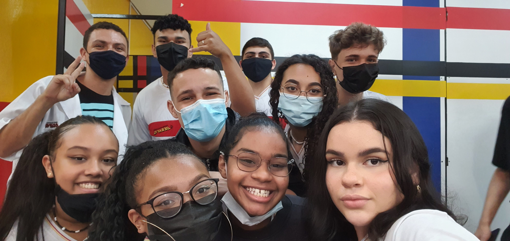

- Professor Kaian Novais -
Professor
especialista
no ensino
de programação de aplicativos
ENTRE EM CONTATO
Projeto desenvolvido com os alunos

Formação Acadêmica:
✓ Graduado em Análise de Sistemas;
✓ Pós em Projetos de Aplicativos;
✓ Pós em Metodologias Ativas;
✓ Graduando em Pedagogia.
O que o aluno aprende com o professor Kaian?
✓ Programação de Aplicativos;
✓ Excel do básico ao avançado;
✓ HTML/CSS;
✓ Bootstrap;
✓ E muito mais...
Diferenciais:
✓ Sala de aula invertida;
✓ Metodologia PBL;
✓ Pedagogo (em formação);
✓ Respeita os alunos.